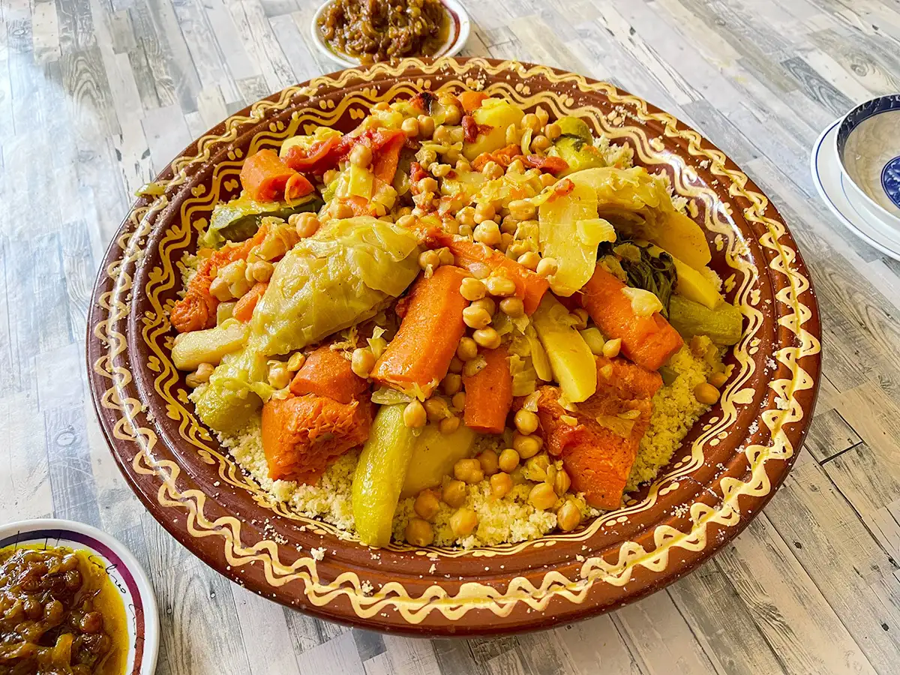

CousCous

What Is Couscous?
Couscous is a light and fluffy North African dish made from steamed semolina grains. It's
perfect for absorbing the rich flavors of spiced broths and tender vegetables.
Ingrediants
- Semolina couscous
- Carrots
- Zucchini
- Chickpeas
- optional: lamb or chicken
- Spices like cumin, paprika, turmeric, and salt
Preparing Steps:
-
Prepare the vegetables
Chop carrots, zucchini, and other vegetables you want to use. Rinse some chickpeas if using canned ones.
-
Cook the vegetables
In a large pot, heat a bit of oil. Add onions, garlic, and your vegetables. Cook for a few minutes.
-
Add spices and broth
Stir in spices like cumin, paprika, turmeric, salt, and pepper. Then pour in water or broth and let it
simmer until vegetables are tender.
-
Steam or soak the couscous
In a bowl, add couscous and pour hot water or broth over it (usually a 1:1 ratio). Cover and let it sit
for 5–10 minutes, then fluff it with a fork.
-
Combine and serve
Serve the fluffy couscous on a plate and top it with the cooked vegetables and broth. Add cooked meat
(like lamb or chicken) if desired.
Why You'll Love It:
This dish is simple yet hearty — filled with comforting textures, bold spices, and
wholesome vegetables. A perfect choice for family meals or cozy dinners.
Back to recipes